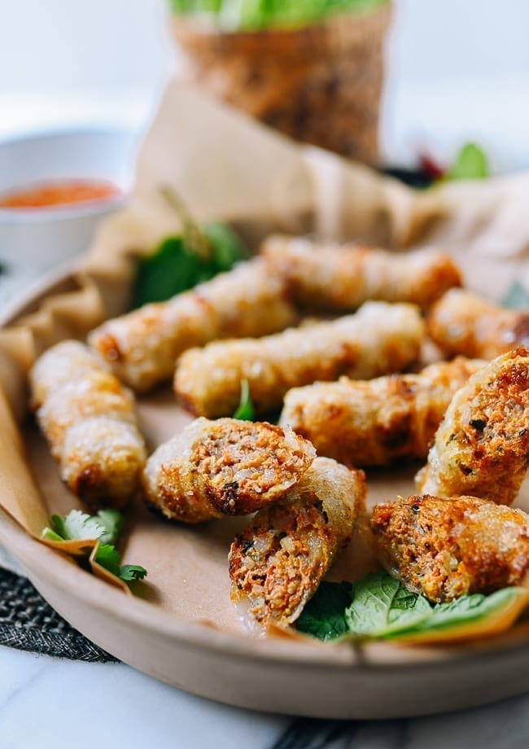

Cha Gio

Description
Cha gio, also known as fried spring roll, is a popular dish in Vietnamese cuisine and usually served as an appetizer in
Europe and North America, where there are large Vietnamese diaspora. It is ground meat, usually pork, wrapped in rice
paper and deep-fried.